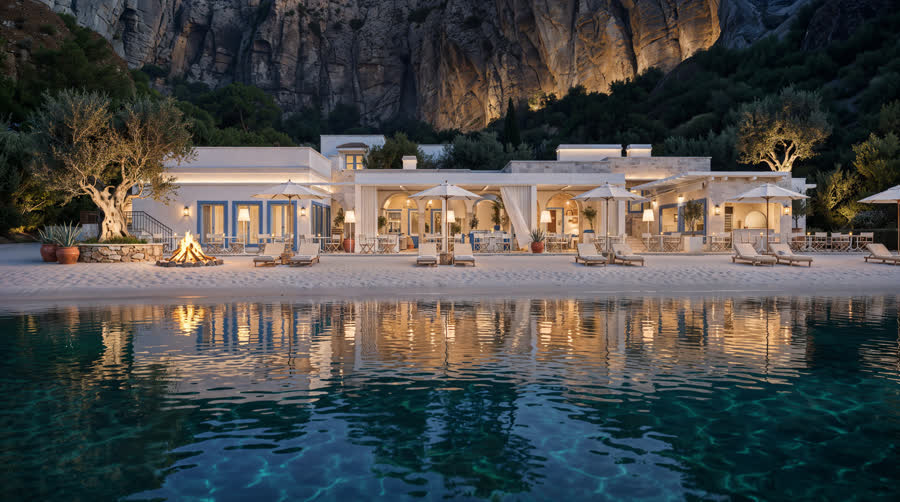
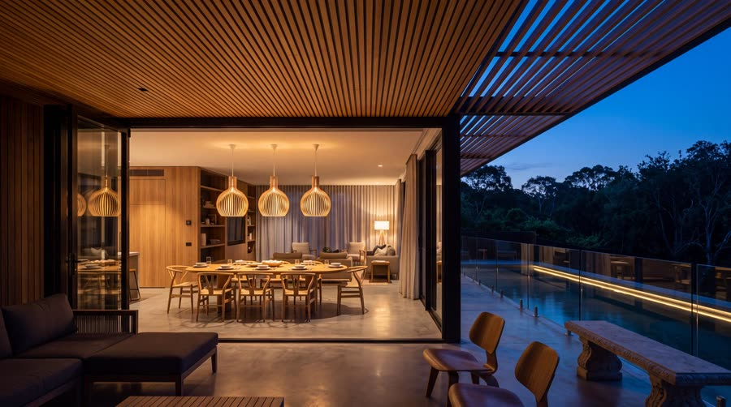
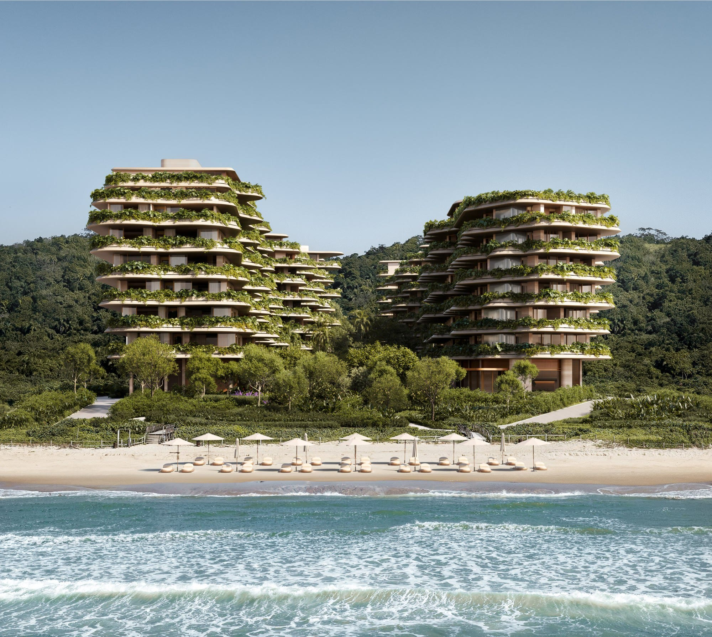

Juscélio Diaz
Senior Unreal Engine Artist — Real-time Architectural Visualisation
- escrevaparajd@gmail.com
- jdiaz.vercel.app
- linkedin.com/in/typeforjd
- Remote · Europe & worldwide



Ten years of real-time work for architecture, virtual production and interactive media — environment art, lighting and look development, with the performance profiling that keeps a finished image running at frame rate. Precisely planned, cleanly executed, measurably fast.
Experience
3D Visualisation Artist
NVision Studios · Newcastle upon Tyne, UK · Remote
Real-time scenes for residential developments: interactive experiences, asset preparation and scene optimisation to keep large residential environments performant on target hardware.
Unreal Engine Technical Artist
Chroma Garden · Curitiba, Brazil · Remote
Delivered three architectural projects on time and to high quality standards. Owned optimisation and profiling across desktop applications and virtual production pipelines for LED-wall environments.
Unreal Engine Artist
Digital Giant · London, UK · Remote
Look development, lighting and shading for automotive visualisation for Hyundai and Genesis, contributing to the studio's internal production ecosystem for consistency and faster iteration.
Unreal Engine Artist
OjinXhaus, previously Journee Live · Berlin, Germany
Led and delivered real-time Web3 experiences for Macy's, Clinique and NARS. Project Lead and Unreal Artist on Meet the Dee — #Joytopia, launched at CES Las Vegas 2023; technical supervision on Macy's Mstylelab, coordinating pipelines across the Unreal Engine team.
Unreal Engine Mentor
UNHIDE School · Rio de Janeiro, Brazil · Remote
Mentored students in real-time environment art and Unreal Engine workflows, guiding portfolio development and production-ready practice.
Unreal Engine Generalist & 3D Artist
Lightfarm · Rio de Janeiro, Brazil
Real-time and rendered 3D content for high-end advertising campaigns — modelling, lighting and look development.
Unreal Engine Artist
Underknown · Toronto, Canada · Contract
Real-time environments and cinematic content for documentary-style video production.
Unreal Engine Artist
Rise New York & Partners · New York, USA · Contract
Real-time visualisation for agency-driven creative projects.
Unreal Engine Generalist, 3D Artist, Graphic Designer
Chroma Garden · Curitiba, Brazil
Progressed from graphic design into 3D and real-time production — the foundation for a technical art specialisation.
UE Generalist 2020–21 · 3D Artist 2020–21 · Graphic Designer 2017–20